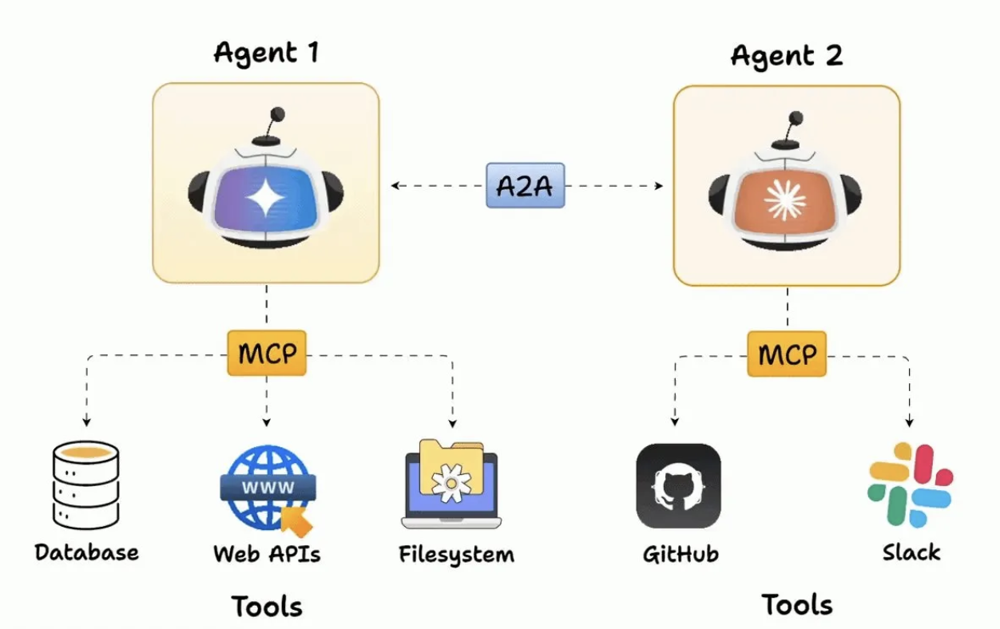

A2A and MCP: A Complementary Relationship
-
Understanding MCP (Model Context Protocol): Introduced by Anthropic, MCP focuses on connecting a single AI model to external tools and data in a standardized way. In short, MCP connects an AI to its tools.
-
How They Work Together: A2A and MCP are complementary, not competing, protocols. A2A handles high-level coordination between autonomous agents. MCP handles the low-level, standardized interaction between a single agent and a specific tool it needs to use.
-
Different Levels of Abstraction: A2A operates at the agent-to-agent level, while MCP operates at the agent-to-tool level, providing different layers of functionality.
-
Synergistic Benefits: The combination of A2A and MCP enables complex multi-agent systems where agents can both collaborate with each other and interact with various tools and data sources.
